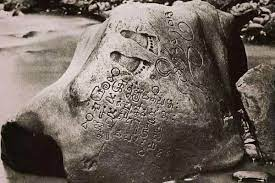
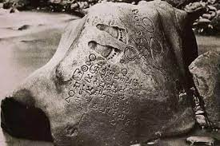

Hello, world! This is a toast message.
1. Kerajaan Hindu tertua yang ada di Indonesia adalah …
2. Perhatikan gambar berikut!
Gambar tersebut adalah…

Gambar tersebut adalah…

3. Ken Arok adalah raja dari kerajaan…
4. Kerajaan ternate terletak di daerah…
5. Yang termasuk kerajaan bercorak islam adalah…


7. Raru Shima adalah ratu dari kerajaan…
8. Berikut ini yang bukan peninggalan kerajaan islam adalah…
9. Kerajaan Tarumanegara terletk di provinsi …
10. Prasasti Tukmas merupakan peninggalan dari kerajaan…